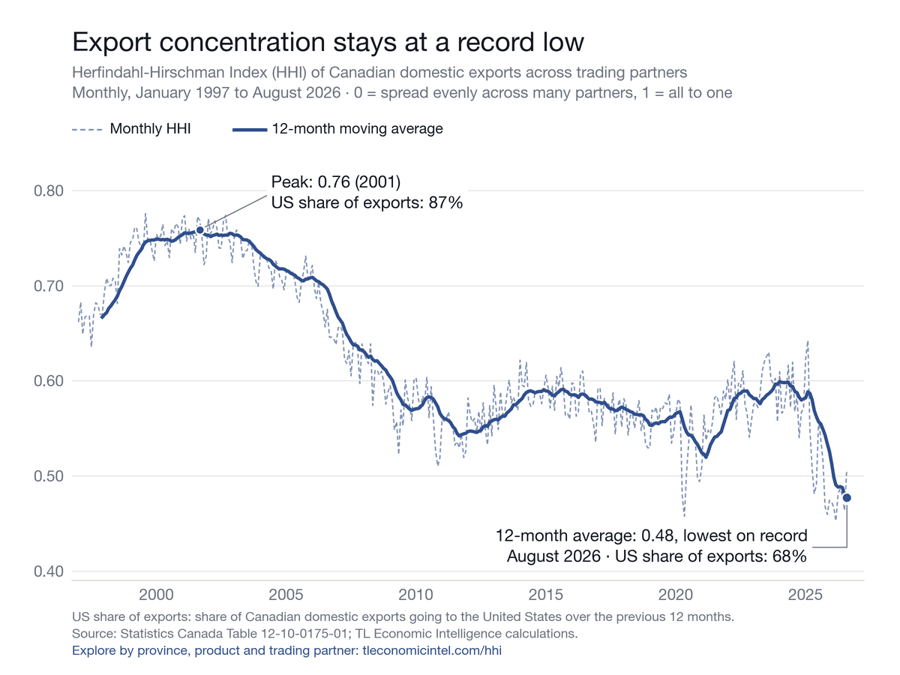

HHI Monitor · August 2026
Canada's export concentration holds at a record low as August's monthly reading rebounds
The monthly HHI rose to 0.51 in August, but the 12-month moving average stayed at a record low. The United Kingdom still accounts for more than half of the growth in non-US exports.
The monthly Herfindahl-Hirschman Index (HHI) of Canada’s exports rose to 0.51 in August 2026 from 0.46 in July, but the 12-month moving average held at a record low of 0.48. The HHI measures how concentrated exports are across trading partners, from 0 (spread evenly across many partners) to 1 (all exports to one). A year earlier the monthly HHI was 0.54 and the 12-month moving average was 0.55.


What pushed August up
The monthly HHI rose to 0.51 in August, from 0.46 in July, as the US share of exports climbed to 70.3% from 66.9%. Two forces pushed it up. Exports to the United States rose $2.8 billion, led by motor vehicles and parts. The United States announced new tariffs on Canadian goods on July 22 that took effect on August 22, and the announcement may have prompted shipments to be brought forward. At the same time, exports to all other markets fell $2.1 billion, half of it in shipments to the United Kingdom, mostly gold. The 12-month moving average, which smooths such swings, remained at a record low of 0.48.
The monthly HHI is 6.1% below its August 2025 level, so the year-on-year direction is unchanged. Over the past 12 months, 68.0% of Canada’s domestic exports went to the United States, down from 74.0% a year earlier and 87.0% at the September 2001 peak.
Exports elsewhere keep growing
From January to August 2026, exports to the United States rose 2.5%, from $350.1 billion to $358.7 billion. Exports to all other markets rose 35.3%, from $125.6 billion to $169.9 billion. Total exports were $528.6 billion, up from $475.7 billion. The US share of year-to-date exports fell to 67.9% from 73.6%.
One route still carries the gain
The United Kingdom accounts for 55% of the $44.3 billion year-to-date increase in non-US exports: shipments there rose $24.3 billion, to $50.6 billion. The UK now takes 29.8% of Canada’s non-US exports, up from 21.0% a year earlier. Metal and non-metallic mineral products make up 93.9% of that UK increase, and Ontario ships 94.1% of it.
Because of this, the HHI excluding the United States moved the other way. Its 12-month moving average is 0.14, a record high, up from 0.11 a year earlier. Canada is less dependent on its largest customer, but much of the new trade runs along one route.
Ontario and New Brunswick
Ontario’s 12-month moving average of 0.47 is a record low, and the US share of its year-to-date exports fell from 74.3% to 64.1%. New Brunswick moved the other way: 91.2% of its exports went to the United States so far this year, and its 12-month moving average of 0.84 is the highest of any province.
What to watch
Watch whether the monthly HHI in September returns toward 0.46 or stays near 0.51. If exports to the United States fall back in September, August’s jump was shipments brought forward ahead of the tariffs rather than stronger demand. At the same time, track the HHI excluding the United States. If it starts to fall while the headline moving average holds, diversification is spreading beyond the UK route. If it keeps rising, the headline gains still rest on a single market. The next HHI Monitor covers the September data.
Explore the data: the national trend since 1997, exports excluding the United States, Ontario and New Brunswick. The full dataset is available to download.
Source: Statistics Canada Table 12-10-0175-01; TL Economic Intelligence calculations.